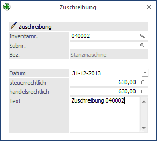

Die Zuschreibung ist eine Buchung, welche die in Vorjahren zu viel gebuchte Abschreibung berichtigt. Es liegt z.B. die Voraussetzung für in Vorjahren vorgenommene Teilwertabschreibungen nicht mehr vor, dann werden diese Teilwertabschreibungen durch eine Zuschreibung im aktuellen Wirtschaftsjahr berichtigt.
Die Zuschreibung wird separat im Anlagenverzeichnis oder Anlagenspiegel ausgegeben.
Zuschreibungen können Sie im Menüpunkt
1 Buchen
1 Zuschreibungen
erfassen.

Ø Inventarnr.
Eingabe der Inventarnummer, lt. Anlage im Menüpunkt
1 Stammdaten
1 Anlagenstamm.
Die Matchcode-Funktion erleichtert Ihnen die Suche.
Ø Subnr.
Eingabe der Subnummer, lt. Anlage beim Pkt. Anlagenstamm; auch hier steht Ihnen die Matchcode-Funktion zur Verfügung.
Ø Datum
Auswahl des Datums, zu dem die Zuschreibung durchgeführt werden soll. Es kann der Wirtschaftsjahres-Beginn oder das Wirtschaftsjahres-Ende ausgewählt werden. Wird der Beginn des Wirtschaftsjahres ausgewählt, wird vor einer weiteren Aktion (z. B. Teilwert-Abgang) der Buchwert erhöht. Bei Auswahl des Wirtschaftsjahres-Endes wird die Zuschreibung am Ende aller Buchungen für dieses Wirtschaftsjahr ausgeführt.
Ø Steuerrechtlich/handelsrechtlich
Eine Zuschreibung kann sowohl steuerrechtlich als auch handelsrechtlich durchgeführt werden. Daher gibt es für beide Varianten die Möglichkeit, eine Abschreibung bzw. eine Zuschreibung durchzuführen.
Ø Text
Hier kann ein 255stelliger Buchungstext eingegeben werden. Dieser Text wird in den Auswertungen Historien-Journal und Anlagestammblatt angedruckt.
Stornierung einer Zuschreibung
Eine Zuschreibung kann - solange der Abschreibungslauf noch nicht durchgeführt wurde - im Menü "Anlagenstamm", Register "Entwicklung", über den Button "Entfernen" storniert werden.
Hinweis
Bei einer Zuschreibung wird geprüft, ob es an einem jüngeren Datum bereits eine Umbuchung gibt und eine Meldung ausgegeben. Die Umbuchung muss dann erst gelöscht werden, bevor die Zuschreibung gebucht werden kann.
Achtung
Mit einer alten Version erfassten Zuschreibungen müssen nach dem Update auf die WinLine 8.0 gelöscht und nochmals neu erfasst werden (oder die Zuschreibung vor dem Update löschen und in der WinLine 8.0 neu erfassen), da sonst die AfA-Zuschreibung nicht per Wirtschaftsjahres-Ende sondern per Wirtschaftsjahres-Beginn gerechnet wird!